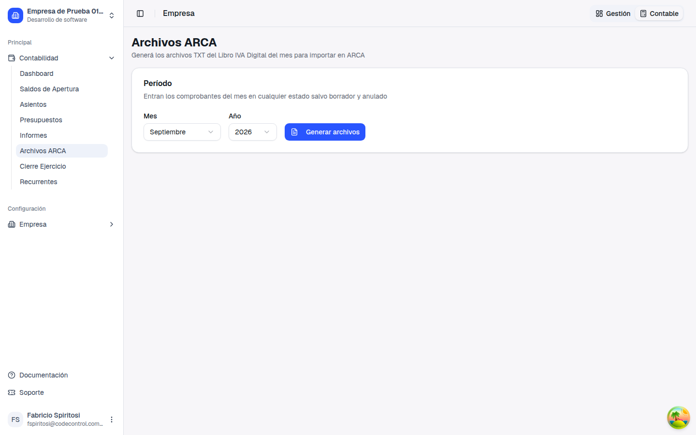
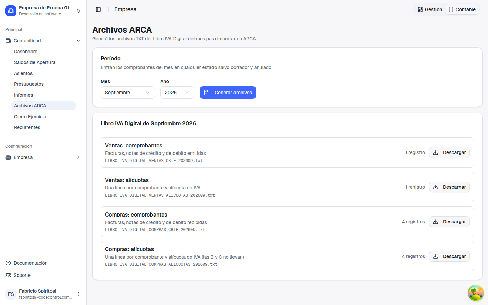
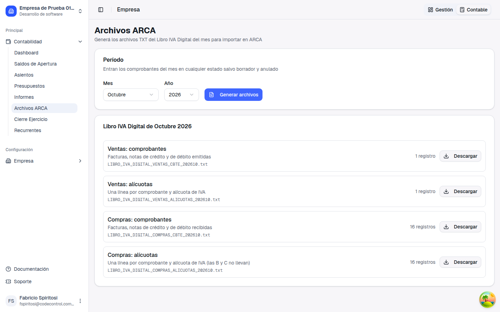

El Libro IVA Digital ahora incluye las facturas pagadas y se descarga desde la app
Guía de presentación: qué pasaba, qué cambió, cómo se usa y qué no cambia
1. Qué pasaba
"El Libro IVA Digital omite las facturas Pagadas y Parciales"
(ticket 796)
El archivo del Libro IVA Digital tomaba solo las facturas en estado Confirmada. Una factura
que ya se había cobrado o pagado, en forma total o parcial, quedaba afuera del libro del mes aunque
fiscalmente corresponde informarla.
Al revisarlo aparecieron dos problemas más, que hacían que el archivo no sirviera para presentar:
No había pantalla para descargarlo. El generador existía, pero ninguna pantalla de la
app lo ofrecía.
El formato no era el de ARCA. Los registros no tenían el largo ni el orden de campos que
pide el diseño oficial (por ejemplo, 310 posiciones en compras en lugar de 325), así que ARCA los
habría rechazado al importarlos.
2. Qué cambió
Antes
Compras de septiembre: 2 confirmadas y 2 con pago parcial. El libro informaba 2.
Compras de octubre: 4 confirmadas y 12 pagadas. El libro informaba 4.
No se podía descargar desde la app, y el formato no respetaba el diseño de ARCA.
Ahora
Septiembre: el libro informa las 4 compras.
Octubre: el libro informa las 16 compras.
Nueva pantalla Contabilidad → Archivos ARCA, con los cuatro archivos en el
formato oficial.
Entran las facturas y notas de crédito y débito del mes en cualquier estado salvo
borrador y anulada.
3. Cómo se usa
Abrir la pantalla. En el menú, Contabilidad →
Archivos ARCA. Viene elegido el mes anterior, que es el que se presenta.

La pantalla nueva, con el mes y el año.
Generar los archivos. Con Generar archivos
aparecen los cuatro archivos del Libro IVA Digital, con la cantidad de registros de cada uno.

Septiembre 2026: las 4 compras del mes (2 confirmadas y 2 con pago parcial). Antes salían 2.
Descargar. Cada archivo tiene su botón Descargar
y baja con el nombre que usa ARCA (por ejemplo LIBRO_IVA_DIGITAL_COMPRAS_CBTE_202609.txt).
Esos archivos se importan en el Libro IVA Digital del Portal IVA. Si un archivo no tiene registros en el
mes, el botón queda deshabilitado.
Otro mes. Al cambiar el mes, los archivos anteriores se ocultan y hay que
volver a generar.

Octubre 2026: 16 compras (4 confirmadas y 12 pagadas). Antes salían 4.
4. Los cuatro archivos
Archivo
Qué trae
Ventas: comprobantes
Una línea por factura, nota de crédito o de débito emitida.
Ventas: alícuotas
Una línea por comprobante y alícuota de IVA.
Compras: comprobantes
Una línea por factura, nota de crédito o de débito recibida.
Compras: alícuotas
Una línea por comprobante y alícuota de IVA. Las compras con comprobante
B o C no llevan, porque no discriminan IVA.
5. Configuración
No hace falta configurar nada. La pantalla la ve quien tenga permiso para ver los
Informes contables.
6. Qué no cambia y qué queda pendiente
✓
Los informes de la app (Posición mensual de IVA,
reportes de ventas y compras) ya tomaban las facturas pagadas. No cambian.
✓
Los borradores y las anuladas siguen fuera del libro.
Pendiente
SIRE y SIRCAR (retenciones) todavía no se ofrecen en la pantalla: falta validar su
formato contra el de ARCA y la Comisión Arbitral.
Casos que el archivo todavía no contempla: ventas a consumidor final sin identificar,
comprobantes en moneda extranjera (salen en pesos con cambio 1) y los
gastos bancarios cargados como comprobante de compra.
Conviene hacer una primera importación de prueba en ARCA con un mes ya presentado y comparar.